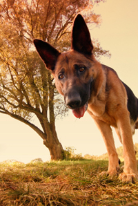

My name is Bessie Anderson and I currently live in a retirement community that has a prohibition on pets. I really wanted to have a small dog that I could take out for walks, but I though it was not possible. Then I heard about Rent A Pet and I was excited to give it a try.

I found a loveable bassett hound and met her when she was delivered to my apartment one Saturday morning. We went through a long walk in the nearby park and had a wonderful time. The great Rent A Pet staff came and picked her up two hours later and I didn't even have to worry about feeding or watering "Sophie".
We now have a regular appointment every Saturday, if the weather permits. I know I look forward to getting in my weekly walk in the park and I imagine Sophie likes it as well.
Thanks for giving me something to look forward to each week,
Yours,
Bessie Anderson
I'm a single college guy and live in an apartment with 3 other guys. I always wanted to have a large breed of dog that would be a companion to take running or play catch with in the park. With the help of Rent A Pet, I found Kamaikaze, a German Shephard. He loves to run in the summer and even cross country ski in the winter. The best thing Kazi likes to do is play Frisbee and run through an obstacle course.
I always attract the attention of girls in the park when we go there. I even met my fiance, Janice, when she joined Kazi and me in a heated game of keep away.
One day I will have a home where I can have a yard to keep my own dog. Until that time, I can still enjoy the companionship of a good dog.
Thanks to Rent A Pet,
Jason Hutchingson
My business requires me to travel quite a bit. So it would be hard for me to own a pet of my own. I would have to constantly find someone to pet sit, or I would have to pay for boarding the pet. I also like to surprise and shock my friends with my unusual pets.

Rent A Pet is a perfect solution for my lifestyle. I have rented a snake, a Saint Bernard, a pot belly pig and an iguana. I know my nurturing skills are sadly lacking because I cannot even keep a house plant alive. I can have fun with exotic pets without having the worry about keeping them healthy and happy. Thanks for adding spice to my life.
Michael Pinette,
Alpine

As a young girl, I developed a love of horses. But I grew up in the city and never had the chance to own my own horse. I was delighted to find Rent A Pet.
They have several horses to choose from for riders of different levels. They will deliver the horse to the trail where I want to ride. Because I can request the same horse time after time, I have become very comfortable with my skills and the abilities of the horse I ride. I would never be able to provide room and board for my own animal.
Thanks for making a dream come true,
Melinda Morrison